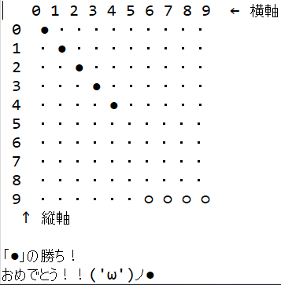

| 開発環境 | Eclipse IDE for Java Developers | |
| Version: 2022-12 (4.26.0) |
Javaを使用した一般的な五目並べゲームを制作
盤上に縦・横・斜め上に５つ石を並べた方が勝ちとなるゲームである。
本ソフトウェアでは、黒石（●）と白石（○）の二人対戦とし、碁盤の座標を入力することで石を置くことができるものとする。
【基本ルール】
起動時
た。
ます。
碁石をおけるか判断する
た。
ます。
碁盤の空き状況判断
た。
ます。
黒石の勝ち

た。
ます。
白石の勝ち
た。
ます。
入力した数値が0-9の間かどうかを判断するメソッド
while文を使用し、何度でも繰り返すことができるメソッドにしました。
碁石を格納した位置を基準として
８方向に向けて石を数えるメソッド
初回制作時は、配列内すべてをチェックするようなスクリプトを使用しておりましたが、制作しなおした際に現在の形に変更しました。
勝利判定
工夫した点でも記載していた、８方向に向けて石を数えるメソッドがなかなかうまく稼働させられず苦労しました。
稼働させられていなかった原因は、引数としてtate,yokoと受け渡す際に+1をし忘れており判定する位置がずれてしまっていたことです。